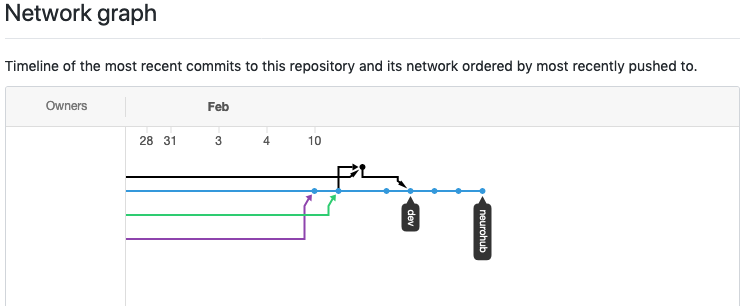
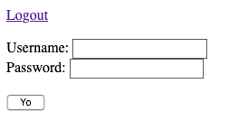

NeuroHub Dev Processes
Pierre RiouxFor: Feb 2020 - Apr 2020
Coding
- We use the CBRAIN codebase as the backbone
- Integration with LORIS: ideas (remind me later)
- All NeuroHub stuff can be managed with CBRAIN too
- Low priority: doing in NH what CBRAIN can do
- Higher priority: NeuroHub-specific stuff
GitHub
- New branch already prepared: neurohub
- No repo forking
- No pull requests
- No tests :-( !!!
- Devs will pull the neurohub branch, commit, and push back directly on it
GitHub 2
- No modifications to base CBRAIN code if possible
- Otherwise: push to dev then merge in neurohub

Rails
- We use plain standard RAILS
- New controllers
- Same models
- New templates: Rails ERB templates
- No javascript
- Namespaces: prefix stuff with nh or nh- or nh_
Dev roles wrt UI
- Backend: no UI fancyness
- Frontend: adjust stylesheets and templates
- Single stylesheet for the whole app
Switcher
- Run 'mode' controlled by env CBRAIN_INSTANCE_NAME
env CBRAIN_INSTANCE_NAME=neurohub rails server
- New CBRAIN class methods: CBRAIN.is_app_CBRAIN? and CBRAIN.is_app_NEUROHUB?
- NeuroHub routes are in a special section in routes.rb
- Template layouts are switched early and make the two apps separate
Main layout template switcher
BrainPortal/app/views/layouts/application.html.erb
<% if CBRAIN.is_app_CBRAIN? %>
<%= render :partial => 'layouts/cbrain_application' %>
<% elsif CBRAIN.is_app_NEUROHUB? %>
<%= render :partial => 'layouts/neurohub_application' %>
<% else %>
Well, not a known value for the app name.
<% end %>
Bare templates
<%= form_tag nhsession_path do %>
Username: <%= text_field_tag 'username', nil, tabindex: 1 %>
<br>
Password: <%= password_field_tag 'password', nil, tabindex: 2 %>
<p>
<%= submit_tag "Yo" %>
<% end %>
Bare templates 2
CSS
BrainPortal/public/stylesheets/neurohub.css
.nh_demo {
border: 2px solid red;
background-color: #ffffcc;
}
Server deployment
- Dev server is live right now!
- Controlled by monit
- Proxied by nginx
- https://portal.cbrain.mcgill.ca:5000/
- Connected to main CBRAIN database!
- Runs in Rails 'production' environment
- Visible only within McGill
- Has: authentication page + welcome page
- Will get: button for automatic GitHub pull + restart